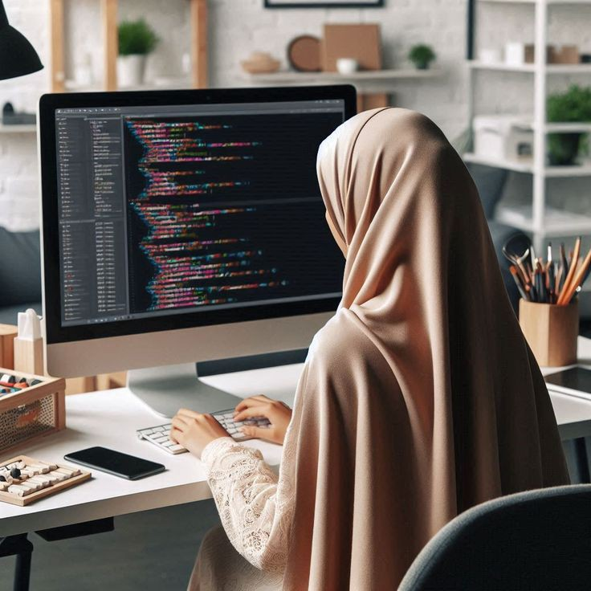

Passionnée par la création d'expériences numériques innovantes, je suis une développeuse web (étudiante) polyvalente, capable de transformer des idées en solutions concrètes grâce à des technologies modernes et des pratiques agiles. Avec une expertise approfondie dans le développement web (grace à des recherches possées), je conçois et développe des sites et applications robustes et performants, en mettant l'accent sur l'expérience utilisateur et l'optimisation des performances. Mon approche du développement web allie créativité et rigueur technique, avec un souci constant d'intégrer les dernières tendances et technologies pour offrir des solutions à la fois élégantes et fonctionnelles. Je suis enthousiaste et curieuse, constamment à la recherche de nouvelles opportunités pour améliorer mes compétences et relever des défis technologiques. Avec une forte capacité à collaborer avec les équipes de conception et de gestion de projet, je développe des solutions web adaptées aux besoins des utilisateurs tout en respectant les contraintes techniques et les délais. Ma passion pour le développement web se reflète dans chaque projet que je réalise, en cherchant toujours à allier performance, sécurité et design pour offrir des solutions web sur mesure.
À Propos
